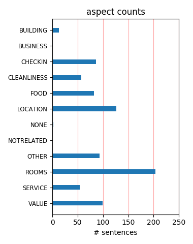
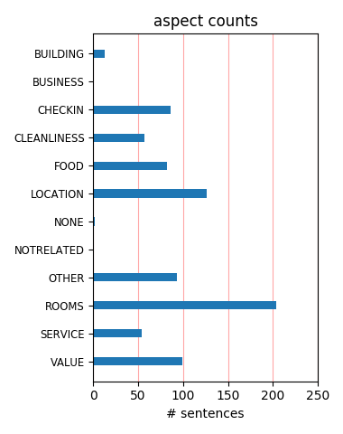

Me and my girlfriend really liked this hotel. Great location(half a minute walk from the tube), 2 minutes walk from tesco,5 minutes walk from baker street. Clean room with an LCD. Nice breakfest(all you can eat). Great value for the money we paid.
I booked Travelodge based on good experiences at other Travelodges but sadly this hotel is tatty and quite run down. I don't think it has been decorated in 20 years and the room I had was not very clean. The only good thing about this hotel was the staff.
Would go back to this Travelodge. It's right beside a train and tube station with all the connections you need for shopping and nights out in London. It is very clean and rooms are a good size. The beds are comfortable. Breakfast is a bit dodgy but you can eat well in the station.
This hotel is average and is adequate for what you need. To get to the relevant bits, good breakfast although bacon underdone, the smallest bathroom I have ever used, literally you could not swing a cat in it, bed comfortable and room clean but basic, but location very good for us.
This hotel is by far the worst I've stayed at anywhere in the world. The bedroom was filthy, the furniture stained, the bathroom full of mildew, no extractor fan, no plugs in the sink/bath. The hallway and lift stank of damp. If I could have walked out I would have done. Never again.
The room was a twin over looking Marylebone underground station. Excellent location (especially for Lords Cricket Ground) Excellent value, breakfast was nice and woth the £7.50 however the bed room was far too hot and made it difficult to sleep which spoilt the stay which was a shame.
Just stayed here the one night for a gig in London.(Jimmy Barnes). Right beside train/tube station which is handy & it's pretty cheap. £40 for a double/twin. Bathroom could do with a few tiles replaced but other than that it's clean & comfortable. Good spot if you are away with the lads.
This hotel is very grotty, hardly any staff to be seen, one lift out of order, beds very uncomfortable, We got talking to two ladies whose rooms bathrooms were full of mould. If we hadn't paid up front we would have checked out. We have stayed at other Travellodges and been satisfied. AVOID THIS HOTEL AT ALL COSTS.
Room was finished to a terrible looking DIY standard. Shower curtains were marked, windows full of condensation and bottom of loo was brown. I had noisy room at the front onto main road. Wouldn't go back unless it was my last resort (and then I'd pay more to go elsewhere and travel into the office from further away.
I guess how you review this hotel depends a lot on how much you paid, and I got an absolute bargain. I love the location and the room was clean, if a bit scruffy, with a broken bedside light and missing sink plug.plug. it was clean though, and quiet (I have stayed in a really noisy room here) and Hugo on the front desk was charming.
It is true after reading the reviews,you don't know what to expect at Travelodge Marylebone.Upon check in the staff were great and helpful, the room do looked old but their English Breakfast Buffet is the best for just £7.50per person. I have stayed in many travelodge but Marylebone Customer service is the best by a mile. Steven Benoit
Stayed for one night at £45.00 per room. Very convenient for Marylebone station, which has M&S Food, and other places to eat. Beds - comfy. Bathroom - small and in need of update. Traffic noise - medium. But at £22.50 pp, can't complain at all. If I was going to London again though, I would stay closer to Covent Garden for theatres, etc.
Good size bedroom but the bathroom is so small! Not a lot of restaurants/cafes nearby but few steps away from the Marylebone railway & tube station (Bakerloo line). Book here if you're in a tight budget and only if you can get a discounted rate (around £59). For a £59, it is a lot better and cleaner in comparison to other hotels/B&b of the same price.
Have been to many traveldoges, this one was the same layout/furnishing etc, was a bit dated though, but acceptable standard for a 1 night stay, right next to marlybone station, and wasnt too noisy. Had evening meal and breakfast and both were really nice. Staff very helpful and friendly. Went to visit madame tussauds, the travelodge is a 10min walk away.
Worked booked me into this hotel because of the location. Location is the ONLY positive about this hotel. Single rooms measure 6ft x 8ft and the bathroom is so small you cant even open the toilet lid fully! No plug in the (dirty) sink, and worse of all I was bitten by bed bugs.... My advise? Sleep tight??? you wont sleep at all here. DREADFUL. Stay somewhere else..
Tiny room, basic decor, toilet didn't flush properly, dribble of water from the shower, taps in basin kept spitting out water so problems with water pressure in my room and my colleagues next door. Room 605/606 are a disgrace, noisy room, awoken by drilling outside,felt dirty even after having a shower. Mouthful of air freshener on entrance.YUK this was just the room.
Ok, so I knew this would be basic...but boy was it basic! Strong smell of bleach/detergent in the reception area. Single room was not much bigger than a wardrobe. Toilet seat broken. I think it was way over-priced at £100, but I don't stay in London often. On the plus side this is a great central location - walking distance from Regent park. The breakfast wasn't bad either.
This was a good, decent hotel in central London. Travelodge is just Travelodge, of course, easy budget accommodation with the basics: bed, en suite, TV, tea and coffee making facilities. This was excellently placed and nice and quiet considering how central it was. Keep clean and tidy and pleasant front desk staff. Good for those on a tight budget or wanting a one night stop over.
Good location, but shabby, shabby, shabby. Room and bathroom desperately neeed refurbishing. Room was noisy and overhot, with broken control on radiator and windows which wouldn't open. Bath stained. All you could eat breakfast, but food cold and gave impression of having sat around for some time despite turning up within 5 minutes of advertised start time. Coffee machine in dining room didn't work. Staff friendly.
London Marylebone Travelodge provided a surprisingly quiet place to stay in an incredibly convenient position which is opposite the rail station & a short to medium walk from Marylebone High St, Oxford Street, Park Lane etc. Of course traffic could be heard but then it's in the middle of London, nothing else could be expected. Otherwise though, it's a clean, safe & very pleasant hotel in an amazing position for a budget price.
This is our third time staying at Travelodge Marylebone. We love the location, just steps outside the tube/train station and our rooms have always been clean and comfortable. The traffic noise was somewhat more noticeable this time around, but definitely tolerable. We had a broken radiator, so the room was quite warm, but those type of minor inconviences are fine when only paying 26 pounds for the room. I'd definitely recommend this Travelodge in London.
The hotel itself is pretty basic and some rooms are noisy. But it is always clean and the staff are friendly and helpful. If you manage to get one of their sale deals you really can't beat this place. Very central, buses to about anywhere in London stop 2 minutes away, underground 5 minutes walk and the train station across the road.Loads more places within walking distance. Shops everywhere and good places to eat. Have been here about 5 times and will certainly go back.
This hotel is in a great location - right next door to the tube station and only a few stops to picadilly circus/leicester square area. The room was fine with a comfortable bed but the bathroom (although fairly clean) was of a very poor standard. I would not employ the builders responsible for this work. The first morning we stayed we had no hot water in the morning but the hotel offered us a refund-no problem. reception staff were brilliant and friendly and a good time was had.
Having read reviews before arriving we thought the hotel was going to be awful, much to our relief it turned out to be brilliant value for money. We had a twin room on the 4th floor, (booked early and paying £43 a night B&B). The room was a decent size and clean. Beds clean. Yes, it needs redecorating. Again the bathroom was clean, however the taps very, very tarnished, couple of chips on bath, it is tired and needs refurbishing, but everything worked and to repeat, everything was clean.
I stayed here for 11 nights in July a couple of years ago and I absolutely loved it. The location is lovely because of: proximity to tube station, safety of area, off license down the street and all of the awesome food places inside the Marylebone station. The staff was great, they helped me with directions and anything else I needed. The breakfast was good, minus the fellow countrymen acting like jerks towards the staff. Good thing I wasn't with them. Overall, I would recommend staying here if possible.
Picked this hotel for location and confidence of Travelodge name. Big mistake! Stayed one night in twin room, bathroom tiny and run-down, door didn't close let alone lock. 2 lifts, one with no light, the other was unreliable. Used stairs to 5th floor as we didn't trust the lifts, evidence of ?vomit on stairs, obviously not cleaned. Drink machine in Reception accepted money but didn't dispense. Receptionist aware of all these problems but there were no notices displayed. Charged £119 for this! Never again.
Stayed here for the first few hots days of July, the only fault we found with this establishment was no air con, apart from this, the location was bang on to where we wanted to go (5min walk to Baker Street), Tube outside hotel: the staff were pleasant throughout our stay & the room was basic and tidy enough. I will be honest the hotel will never win "Best Hotel" in London award, but is not £200 a night and therefore to have a moan just because a bit of wallpaper is peeling or the waste bin is damaged, is just being too trivial
Got a bargain as i only paid £19 a night for the room. If i had paid more i think i would be disappointed. The room was pretty small, and there wasn't much storage space for clothes, but we managed. The bathroom was in need of tarting up a bit, and the sink took ages for the water to drain out. The staff were very friendly. We only ate once in the small bar area, the food was reasonably priced and quite tasty. The obvious attraction is its proximity to Marylebone Station, but if i go again, i will probably choose another Travelodge
OMG!!! this place is bad, i have never written a bad review but tis place is bad.. Paid for early check in, got there at 12 to find a big que, waiting for someone at reception, then they appeared and said i better go and check the rooms, gone for about 5 minutes,, all still waiting there. finally checked in 20 mins after arriving, Went to our room which was average, mould around the bath and shower broken mirror and just really tatty. We decided finally at 930pm to just go home and not stay in this hole so we got a train and slept in our own bed.....
Reception staff were very helpful on check in. Twin room on 5th floor. Shabby bathroom and decor but the room was very clean and the bed comfortable. The hotel is located next to Marylebone train / tube station and is very well placed for public transport. Didn't eat at the hotel so unable to comment of food. Not as good as the rooms in other travelodges I have visited around the country but at £49 per night in central London it is a good no frills option. Perfect if you just want a place to sleep! I would be happy to stay here again as the location is so good.
I recently had the pleasure of staying here. While this hotel is in a great location, close to the station, and convenient for many other parts of London... I wouldnt reccomend staying here. Why? Simple the hotel is CRAP. It's old, tired and in desperate need of a renovation. Please start by blowing it up, and starting again. My hotel room was so small it wasnt even a room. It was more like a cupboard. I have stayed in MANY Travelodges in the UK, and thought them to be fantastic at meeting my needs. This one wasnt fantastic, and didnt meet my needs. Stay elsewhere.
I got a fantastically cheap deal so based on what i paid i cannot complain at all. However, if i had paid the full whack i would have been a little disappointed. Good Points: Great location, right by Marylebone Station. Staff polite and helpful. Room clean. Not So Good Points: overall appearance of the room was shabby and tired, in dire need of some tlc. Not up to the usual Travelodge standard. Gave the impression it was a youth hostel which they'd altered and turned into ensuite rooms as cheaply as possible. Plywood chips etc clearly visible in bathroom. Bed was lumpy.
Stayed here in May 2011 and paid £95 for a room without breakfast. Given the location - right beside Marylebone station, I thought this was an excellent price. Location felt safe for central London - I was walking around at 10pm and no dodgy characters were about. Rooms very bland but clean. If you don't have high expectations and simply need a room to stay overnight in this is a good option. I had the breakfast at £6 but felt this was a waste of money as it was simply hideous - I think you'd be better popping to a nearby starbucks/prets and buying coffee and a pastry.
The hotel is fine, clean and basic but that's all you're paying for with their low prices. There was TV, tea/coffee and towels in the room. You have to provide your own tolietries and hairdryer but they tell you that in advance on their wesbite. The staff were fine and the buffet breakfast was nice enough. Biggest disadvantage is the fact that there are little to no bars/restaurants close by, we arrived late on a Friday night and the only place we could find was at Baker St and at that it was a kebab shop!! Would recommend if you were sure you weren't going to need a meal near the hotel!
I recently stayed in this travelodge during a short overnight business trip. I was apprehensive as I'd read the reviews prior to travel. I accept that Travelodges will be basic and having stayed at a couple before thought I'd know what to expect. Problem is that although my twin room was adequate (although shabby and in dire need of renovation) the bathroom was filthy! Regardless of cost there is NO excuse for poor cleanliness. I was a little embarrassed as we had invited business guests. Breakfast was ok for the additional cost but £116 for this, London or anywhere, is a disgrace. Won't be returning.
The hotel was very easy to find as just outside the trainstation. Check in was very quick as had pre-paid. The corridors were quite small and a bit grotty. The room was comfortable, bed and bedding clean and the supply of a large fan was much appriciated as it was quite hot and not very well ventilated. The bathroom was a bit of a let down as there was mould on the windows and seemed dangerous as not double glazed and right over the bath. The shower curtain was way too long and easy to trip over. The loo seemed to not want to flush. We did have a hot shower though so that was fine. OK for a night but not much longer.
Stayed for 2 nights in this well located hotel and was happy to take advantage of one of there special room sales which meant i was able to get two nights for £32. The rooms are spacious and clean with television tea coffee making facilities in the room also en-suite. This hotel is ideal for me as i flew into Stansted Airport and used the easybus non stop from statsted to baker street station which is only 10 minute walk from this hotel. As hotels are expensive in London i would say it represent excellent value at anything upto £60 a night i also had the buffet breakfast and found it very good value with plenty of choice.
We were surprised to be charged £10 for checking-in 'early' at 12.30. A similar charge would have been made had we wished to check out 'late', i.e. between 12.00 and 14.00. There are no facilities for left luggage at this hotel, so we had to travel two stops on the Bakerloo line to Paddington Mainline Station, where we were charged £ 8.00 per item for the first 24 hours. (£ 4.00 per item for each subsequent 24 hours) The breakfast is good, but suggest the Sports Bar on the opposite corner of the road. The current advert for rooms at £19.00 is a bit of a cheek, as we paid considerably more. Maybe we expect too much of London?
A long overdue review... Booked the Travelodge due to proximity to LBS (was attending a course) and value - sadly by the time I booked there was no early bird rate and I paid full price. Being a hotelier, wasn't expecting much in terms of service and luxury...but was depressed when I walked in the room! The size of the single room is appalling - like entering a broom closet! The plumbing needed dire repairs - nauseating smells even when bathroom was not in use... and mattress was super-uncomfortable. Missing amenities were not replenished and had to ask to fix the electronic key everyday. Only saving grace was location...but would never stay here again.
The Travelodge Marylebone was a convenient base for us as we travelled to Marylebone station on Chiltern Railways. Apart from this advantage, thearea is a little way off the public transport network and we spent a fair bit of time waiting for buses. Staff at the hotel were very efficient and gave a warm welcome by Travelodge standards. The room was basic and rather austere, but did benefit from a full size bath, however the hot water was very warm, not hot! This £80 a night hotel becomes more like £95, when you factor in the cost of breakfast and left luggage at a local station (£16!). Why can't Traveldodge offer this service for free, like so many other hotels?
Stayed for 4 nights in total either side of a Holiday from Heathrow (cheaper and easier than staying "on airport") Staff friendly enough for London. Given a largish room overlooking the side of the station.Clean modern and functional.The king size bed was a little of the cheap side( mattress) but slept ok saying that.The best thing about this place is its so handy for the station and more importantly the tube(when you have suitcases!) Its roughly 15-20 meters from the tube to the hotel. There is an M&S in the station so very easy grabbing a couple of croissants for breakfast without forking out £7 ish for the hotels breakfast.Defiantly one of the better Travelodges.
stayed here september 21st firstly this was the cleanest travelodge i have ever stayed in and the staff were really helpful and friendly the lady even called "thank you for staying with us". we check in early and paid £10 extra and it was nice the receptionist gave us a option of floor. After a small mix up with our room we were offered a free breakfast. breakfast would have cost £7.50 each but I must admit the breakfast was not too good.we would not want to pay £7.50 , when theres a wetherspoon pub at baker street 5 minutes away serving breakfast. all in all will good back its a great location right near madame tussauds and only a 10 minute walk to oxford street.
Recently stayed here for three nights with a small child. We found the location to be absolutely perfect for sightseeing, so close to the trains, tube and the tourist buses. The rooms were adequate,beds comfortable and we actually had some good nights sleep (fantastic double glasing!). Dinner was pretty average, and they seemed to be comppletely understaffed with the barman being the chef too, so for a meal that we hoped would only take half an hour turned into a marathon. Only real disgruntle was that the rooms were too hot and we couldn't open the windows. Apart from that we would definately stay there again, might book it further in advance to get a cheaper rate :)
Pretty standard single room... be prepared for it to be small but well formed! The toilet doubles up as a wet room too, so be careful of where you place the toilet roll or it could end up very soggy- the same with having a shower, creating a wet floor, then getting dressed and needing to use the toilet!!! In fairness, my brother-in-law had a family room here last year that was very spacious and light. Breakfast is buffet style and good value for money for Central London & could happily set you up for the day!! Cannot fault the current deal- Up to 2 children up to 15 eat FREE with ONE PAYING ADULT!! Superb value for money. A combination of cereals, continental & full cooked on offer.
Where to start... I have stayed in a number of Travelodge's but never one even nearly as bad as this. Both lifts are currently broken. The rooms are dated and dirty. There are dirty patches around the sockets and light switches in the rooms. The bathrooms are tired. Ours has loose tiles on the floor, a loose basin tap and the basin doesn't drain properly. The only positive so far is that the shower works well. It seems like the double glazing only goes to the second floor so its really noisy on the floors above. The window restrictors are broken in both the rooms we have. It feels like no one cares about this hotel or the service it provides. This hotel is not even worth it's low price.
Although this budget hotel has a great location right opposite London Marylebone station, the hotel is one to avoid. My room was dirty (long hairs in my bed, dirty bathroom, split floor tiles, stained carpets) and the staff were even worse. To check-in is usually a straightforward task - and the first point that a hotel can show its hospitality. Unfortunately, the person who served me could speak little English, charged my card incorrectly two times before getting it right, and managed to give me the wrong invoice. Not a smooth check-in process. Oh... and don't forget the smell in all public areas and the emergency lighting on the stair cases that was out of action. One to avoid if you can help it.
Good location, large clean rooms, small bathrooms but a bath, shower, toilet and sink so what more do you want. Beds were comfy and hotel was right next to Marylebone station. Breakfast was plentiful, cereal, bread, muffins, pastries, tea, coffee, juice and hot english choices like scrambled egg, sausage bacon etc. However you can get a cheaper breakfast at the station or at a cafe a two minute walk past the station called Egg and Bacon. BE WARNED, we asked three times for an iron and they didnt have one so invest £10 in a travel iron and take one with you. Overall an enjoyable stay in a good location. The 453 bus goes from the station to Oxford Circus, Trafalgar Square so a handy bus if you dont want to use the tube.
The hotel is just in the final throes of being refurbished at the moment, with new carpet being laid in the hallways. Its not a complete refurbishment - we had new beds, and new TV in the newly painted room - in the bathroom it was the original suite with new taps. The shower worked well though and there was plenty of hot water.The hotel is well located and we had not problem with street noise. Marylebone station is right across the road and has a M&S which we used for snacks and breakfasts. There is no left luggage facility at the hotel or at Marylebone station,. You have to go to either Paddington or Euston stations. As long as you are looking for hotel that you leave in the morning and then came to at night to sleep, this will suit you fine.
After reading the reviews on trip advisor I was apprehensive about staying at this hotel. The only reason I booked it was because we went to a wedding across the road at the Landmark And it's location is so convenient. It was no where near as poor as I expected. The receptionist was polite and check in was quick. Whilst the decor is warn it is clean and I did not detect any unpleasant odours as mentioned by other bloggers. Our double room was spacious, clean with a very comfy bed and soft pillows. We heard very little noise during the night. Yes the bathroom had seen much better days but the water was hot, the hotels fine and how long do you spend in a bathroom anyway? The cost for a central London hotel was very cheap and all in all I was satisfied .
Despite making the reservation over the internet on the 9th of May, when I arrived on the 17th of July I was told that the hotel had been overbooked. Whilst waiting to find the outcome of this the guests in front of me where trying to get a refund on the soggy burger and accompanying uncooked 6 chips that had been their evening meal. My outcome from the situation was quite fortunate- I was to be moved to another, apparently 'much nicer' hotel and a taxi was organised and I was transported to...The Sloane Square Hotel! At the expense of Travelodge who had made the mistake and where ready with the alternative accom. Admittedly this is on the other side of London, but a definite result. Read my review of The Sloane Square hotel, a world away from Travelodge.
You know what you are getting with Travelodge it should be cheap cheerful and clean. There is absolutely no excuse for the rooms and bathrooms not being clean. The bathroom was a disgrace, net curtains filthy, window safety catches broken. No air conditioning there have to keep windows open at night equals very noisy. Beds have gone past their sell by date. The whole hotel is very tired and needs a total refurb. You cannot drop your bags off without having to pay for an early check in which is £10 extra! No hairdryer in the room you have to borrow one. To cap it all the fire alarm went off due to a fault on the board which they knew about and blamed it on the engineer - the roll call was a shambles. Will definitely not be staying there again even if you paid me.
I travel to London a couple of times a year, arriving by train from the west country. Travelodge at Marylebone is my hotel of choice because I can walk to it from Paddington station. The hotel could do with a bit of a re-furb, the bathrooms especially are dates & a bit grubby & the plumbing is not great, however the beds are always exceptionally comfortable & the rooms are not too hot, there is no temperature control but the windows do open a bit, even on the upper floors. Quite a lot of outside noise but in central London I expect nothing less, no noise from inside the hotel from other guests or banging doors though. Friendly receptionist, quick check in. We did not eat in the hotel, there is a M&S & other shops in the train station across the road which have a good selection of food available.
It really shows that this is some old hotel bought and cheaply converted to the Travelodge brand. Very small single room, with an unstoppable draught from the old, ill-fitting window and ineffectual heating. I used one towel to seal the gaps in the window and another as a much needed extra layer of bedding! The bathroom wasn't exactly dirty but it was old and worn with heavy limescale and tatty fittings. Cafe Bar is a tiny windowless room in the basement serving lacklustre food so I'd suggest you don't book meals as part of your stay if you do come here. Generally I'd say avoid this hotel - go for one of the proper, newer Travelodges at Euston or King's Cross instead unless you're desperate for a cheap room. Only worth considering if you can get a £10 or £19 deal and just need a one night bolthole.
Located just next to Marylebone Rail/Tube Station, or a 10mins walk to Baker Street Station, getting anywhere is just easy. I booked my rooms early and got it at 49 pounds a night, but I believe rates can go to even lower to 9 pounds if you book it really really early, like 5mths before?! Nice cafe just round the corner (opp. Marylebone Station) that serves very good breakfast for about 4 quid. Prefer the bus? Hop on to bus service 453 which is also in the same area which brings you straight to Oxford Circus/Piccadilly Circus in about 15-20min, depending on traffic conditions. Marylebone Station is also where you take the rail (45min ride) to Bicester Village where designer brands are sold at knock-off prices - great location for the fashionista! All in all, I would definitely choose this hotel if I return to London again!
I can hardly believe all the negative reviews this hotel seems to get. We have been here twice and had no complaints. I suggest people who are thinking of staying here READ CAREFULLY the booking conditions BEFORE they complain. In does not say that fridges, phones, hairdryers or irons are provided in the room or you will be able to check in before 3 p.m. without paying a supplement. We have never had a room which has been bad like some reviewers suggest. Yes it can get very noisy from the traffic outside but after all you are in London - how can you expect it to be anything overwise? We have nothing but good points to say about this hotel, especially the courteous staff and the excellent transport links. I wish to point out that I do not work for Travelodge - this is just my HONEST opinion. See you soon London Marylebone Travelodge.
The Hotel is situated over the road from Marlyebone Train/Tube Station. Which is ideal for getting into the centre of London as these tube lines are a lot quieter then other Tube lines. The reception was small and basic with a couple of computers if you wanted to access the internet for a fee. The room was clean with modern decor. It was booked as a twin but the room was too small and it meant that the two beds had to be pushed together so it was more like a double bed. The bathroom was ok, there was a huge amount of sealent around where a hole used to be in the wall. The breakfast was all you can eat with everything that you would expect from a buffet being present, however the bacon and egg's ran out and took a while to be replaced. Overall the room and hotel were fine for the price we paid and it was only one night so can't grumble.
Although the Marylebone Travelodge was in a great location which mattered to us most, our room was terrible. The Bathroom was unclean and very warn (cracked mirror with a section missing, stained sink\bath, toilet wasn't fixed to the floor properly and wobbled when you sat on it). The bedroom wasn't fabulous either, the curtains didn't fit the windows properly, the skirting boards were missing, the door was stiff to open and close we must have woken the neighbors every time we went out and came in. Other than the room we had a fabulous time in London and if you do stay in this hotel it's a great location with the tube\train station literally over the road (we had a room facing the station and we didn't hear much noise during the night). I would also recommend eating at a little Indian restaurant about 5 minutes walk away called Romna, lovely food!
Having read some of the reviews on this site I was quite unsure about staying in this hotel and contemplated cancelling my reservation. It is true to say that some of the criticism is justified. Our room was shabby and in need of decoration. The room was noisy due to the busy road outside. The facilities, as with all Travelodge hotels, are limited. However, there were also many good factors. We were able to book this room for just £19 through one of the offers run by Travelodge (a bargain for anywhere, let alone London). The location was excellent - literally opposite Marylebone station. The check in staff were friendly and efficient. The room though basic was clean. If you want luxury accommodation don't stay here - but get your cheque book out. If you want a good value base for a night or two in central London this may just be the hotel for you.
We actually stayed in this hotel about 4 years ago when it was a Ramada Jarvis, so we knew that the location was excellent, and our first stay was very positive. We booked a room at £49 per night (it was half term so rooms were no cheaper) which for London is a steal. The staff were really helpful and as said before the location is spot on, but the rooms have definitely gone down hill since our last trip. The rooms have been given a half hearted rebranding, but there are still the same old desks, the lift still has Ramada logos in, and the bathrooms are crying out for a refurb. The rooms have got very scruffy, and the whole hotel would benefit from a complete facelift. If this refurb took place, we would defintiely be regular guests. The loaction is fab, staff are attentive, and the breakkie cheap. But until it is smartened up, we won't be going back.
Saying this hotel is basic is an understatement. There is no even soap in the bathrooms, no ventilation or air conditioning meaning you have to keep a mini corner window open and get all the buzz and noise of central london at night and day. There is dirt from the moment you arrive in the hotel, in the stairs, the lift, the doors, is like it has never been cleaned. The room cleaness was limit, probably the only reason why I decided to stay at the end, but the first impression was really shocking. Then I guess the experience wasn't helped much by the unhelpful staff. There are 2 black ladies at reception who are unbelievably rude and one chinese who can barely speak any english. The only positive thing about this hotel is that is right in front of Marylebone station, but still that does not justify charging prices of a 3-4 start hotel!!. NOT RECOMMENDED AT ALL.
Went in Dec 2008, the hotel is an old Ramada hotel that Travelodge have bought and put their name on it, first room we had was mouldy and smelt, we were moved to the third floor, no lamp shades on wallights in corridor and a few "fist" indentations in the walls. second room had no heating and the shower head kept falling off and again mouldy and smelt, had to stay because we had no were else to go. Must be the only hotel were i have never had a shower in the morning because i felt everything was dirty, we did compalin and were given a free breakfast. This was served by the man who we had just seen cleaning and the lobby, it was cold and tasted funny. The staff were very apologetic about the state saying that it was going to be refurbed in 2009 starting on the lower floors first, so if you do need to stay there ask if any refurbs have been done first otherwise give it wide berth.
I stayed at this hotel with my mum after a short trip to Stockholm. We just wanted a cheap twin room for the night and thought of Travelodge as I've stayed in them before. Normally nice, clean, simple and good value hotels. Marylebone is a different story. The reception area and corridors are very tatty and dated, but this was just the start. The rooms are very dated and in a dire state of repair. Warn carpets, chipped furniture, what seemed like plastic curtains, dirty old kettle and beds that you would struggle to get a good nights sleep in. The bathroom was just as dated with a broken mirror and rusty waste fittings. It seems Travelodge have purchased a crumbling hotel and simply hung their own sign over the front door. I would think very carefully before booking with Travelodge again. The only good thing to say about this hotel is the location which is certainly very central.
This Travelodge is definitely one of the better hotels in the chain. Situated about a 30 second walk from Marylebone tube station, it is very easy to find. There is a Marks and Spencers inside the station which is very handy although a tad pricy but hey it's London. The staff were very friendly throughout and attentative. The room was on the first floor and we were very impressed for £29 a night! The bed was suprisingly comfy, the bathroom had seen better days but I'm not complaining at all. It was clean and smelt nice, and there was plenty of space to hang clothes and dump shopping. One small problem is that the walls are quite thin so if you have loud neighbours (which always seems to happen to me!) then you'll have to bear with it until you sleep. All in all I was very impressed and wouldn't hesitate to go back here, nothing fancy just a good comfy clean bed and a nice hot shower!
The hotel is simple and functional like any other Travelodge. While they have renovated some parts of the room, it is obvious that the hotel is desperately in need of a complete renovation. It looks like parts of the hotel has not seen any work done to them since when the property was built, probably back in the 1960s. Some of the staff were atrociously rude! Try getting service and you will end up with the staff arguing with you for no apparent reason! Location wise, it is good, being located just across the street from Marylebone station. There is an M&S at Marylebone station, a Tesco around the corner (diagonally on the other end of the same block), and another Tesco down the street from Marylebone station, about 2 min walk away. But being in the Marylebone area, places for food are rather limited in choice and expensive. I didn't find noise from traffic, delivery trucks, rubbish trucks, etc. being a problem.
Dire, soulless and dismal. This was booked for a business stay over after a client event in London. Travelodge doesn't worry about niceities such as wifi and staff, count yourself lucky if you get a plug in your sink - 2 out of 4 of our group rooms didn't. What visitors to the Olympics next year will think of us, heaven only knows! We arrived before 3pm and were made to pay £10 extra to leave our bags in one room. Yet amother way to fleece the unsuspecting huest, as everyone expects check-in to be 2pm like almost everywhere else. I suspect this is a converted ofice block from the seventies, as the windows are single glazed, badly fitting alumunium type. As such the noise from the road ensured a disturbed nights' sleep. Breakfast is the usual cheap, nasty lowest cost version of everything in an overheated, over lit room with a stuck CD droning on. The only positive i can report is that at least it was reasonably clean and the bed was comfortable.
It is always difficult to review a hotel when your own experience is often focused on the particular accommodation or room you stay in. We were given a first floor room looking directly towards Marylebone station. Good view! But... It was not a warm day (about 18 deg C), but the room was baking. Windows had restrictors for safety, which restricted air movement. Fan provided, but was very sick! Naturally, no air conditioning. Having the windows open had the negative effect of noise - late night revellers, emergency service sirens, early moring rush and bin men. Not a good nights rest. The en-suite was similar with a shower that showered everything, making it a very "wet" room!! The bedroom was VERY tired, indeed close to being a refusal to stay. We did not stay in the hotel for food - there are some good places nearby towards Oxford Street. The location of this hotel is very good, but seriously let down by its poor condition. Not recommended until refurbed.
I just needed a cheap overnight stay in London and managed to get a £26 Saver rate at the Travelodge Marylebone for a Sunday night (TOP TIP: the Travelodge website tends to have good availability for London on Sunday nights at the cheap rate - this is the third time I've booked) . The room was massive compared to others I've stayed in - it was a twin and there was plenty of room. Everything was clean and worked OK but there were a few dodgy bits where the attention to detail wasn't up to much (see pics). There wasn't anyone on reception when I arrived and after waiting for a while, I found someone in the downstairs bar who wasn't in any hurry to check me in. Didn't bother with breakfast. It's in a great location though - right next to Marylebone Station so dead easy to find and good connections. I walked from the hotel down to Baker Street, Marylebone High Street and Oxford Street and it's a pleasant walk so ideal if you want the shops/Madame Tussauds/etc.
I never expect too much at these types of hotels but this one was bad. The bathroom was falling to pieces, a new sink had been fitted into an old cabinet and there were holes everywhere - the shower which was in front of a badly painted frosted glass window was next to useless - and it just felt dirty. The room was on the noisy corner with traffic all night long - it was extremely hot and as it faced East the sun in the morning came through the holes in the curtains! On the positive side the breakfast wasn't bad. We also found it hard to believe that although the check in was 3pm we arrived at 2.15 to be told that a charge of £10 would be made to check in early! We just went to the pub and had a beer... we checked out early perhaps I should have asked for a refund? The lift was filthy - I wouldn't touch the buttons and I am not that fussy! Don't use this place unless you are desperate and Travelodge get your act together and do this place up - what a poor perception of UK standards foreign travellers must get!
I have stayed overnight at this hotel twice within the last month. Both times I paid the 'saver' rate of £35. The hotel is in a reasonable location directly opposite Marylebone Rail and Underground station and within walking distance of Oxford Street (about 10-15 minutes). There is a small lobby area with sofas and 2 free internet terminals. The hotel has a bar in the basement and a small restaurant neither of which we used. Both stays we had rooms on the 2nd floor at the front of the hotel, they were pretty much identical. Very clean and a reasonable size with 2 large single beds, the beds were comfortable and had duvets. The furnishings are pretty basic with just a small clothes hanging area and a small desk/dressing table and a chair, but perfectly fine for a short stay. There is also a wall mounted LCD TV although this only has a limited amount of channels. The bathrooms were VERY small but again were clean and did the job. I would recommend this hotel for a short stay especially if you can get a cheap rate.
The only good thing about this hotel was the location. Spend a bit more & don't stay here. We thought you couldn't go wrong with a Travelodge.....boy were we wrong. On entering the hotel, there is brown patches on the ceiling & the hand rail is swinging in the wind. The reception is a sort of hatch with a grubby bench in it. I felt so sorry for the staff, they know how bad it is. After going to our room, I asked to see another as the desk was hanging off the wall, the bathroom was mouldy, so were the curtains. I was given three cards to different rooms. They are all the same....very small, very shabby & very dirty. What ever you do, don't lift the sheets off the mattress, or the mattress off the bed frame, yuk. In the end I settled for a room, as I was losing the will to live. Should have looked better, as there was a hole the size of a football in the bathroom ceiling, with lots of thick black mould around it...lovely. A nice piece of someone elses chewing gum next to the bin just topped it all. Many thanks Travelodge.xxxx
Hotel location is great, it is just across the street from the Marylebone tube station and about a five or so minute walk from the Baker St. line. The bar was nice and cozy and the all you can eat breakfast buffet is pretty well stocked with eggs, bacon, potatoes, yogurt, toast, fruit etc. etc. a pretty good way to start your day! If you can stay during the supersaver nights (26UKP) then I guess you could put up with the rusty fixtures, mold on the walls in the bathroom, a hard mattress, and I guess you could even put up with a dead mouse in your bathroom! I however, did not pay 26UKP I paid 49 UKP which adds up to $98 which is too much to pay for a room with a dead mouse in it! They were “oh so kind� (please note sarcasm!) and gave me 26UKP back! - I have since tried to contact them about this and they have refused to answer me. I guess all in all if you like rodents then go ahead and stay at this hotel – if however, like me, you don’t particularly want to pay for a mouse’s room and board then maybe go and find a different hotel!
I stayed here for one night when I was going to the US Embassy to get my US Visa as I had an early appointment. I paid in the region of £40 with another £10 all in advance for a double room, dinner and breakfast in the hotels 'restaurant'. I arrived after 3pm so could check in easily. The room needed redecoration soon. Paintwork was ontop of wallpaper that was starting to peel. The furniture looked old and was showing its age. The bathroom was equally as old and tired. Corridor had a whiff of bleach about it. The stay: I went out for a walk and got back after dark to find out that none of my lights were working. So a trip to reception and the receptionist / manager came to check I knew how to use a light-switch! I was then moved to the 5th floor which was better....refurbished about 2 years or so ago. The food: Travelodge standard...quick and easy food for dinner...usual buffet for breakfast. Its right next to the station which has M&S simply food for snacks etc and the usual station outlets. Overall dated hotel but with good location and good local facilities.
Travelodges in London are generally of a much lower standard that those in other towns and cities around the UK but this one was dreadful. The advertised Bar Cafe was not really available - they were serving drinks but no food. A rather embarrassed member of staff offered to send out for a pizza for me, but the result was (a) more expensive than the Travelodge advertised equivalent, and (b) so dreadful that I would probably have derived more nutritional benefit from eating the box it came in. I am also seriously concerned about the maintenance in London Travelodges. When I got stuck in a lift in one in February, I thought that was just a one-off. After spending half an hour stuck in my bathroom at this place because the door handle broke, I began to sense something of a pattern. In the end the Manager had to break the door down to free me. Worst of all I have been trying to contact their Customer Services people for 5 weeks now and no one ever responds. For a few pounds more you can have a much better, safer experience elsewhere. That's certainly what I will be doing in future!
Had a double room for £160 a night. Bathroom had some black cling film type stuff stuck to the bathrooms windows that wasn't even cut to the right shape and size of the window. Toilet was broken and I had to take the lid off and fiddle with the ballcock to get the toilet to fill up and flush properly. Toilet handle came off in my hand. No irons or hairdryers in the rooms - why? Receptionist was running around like a lunatic deliverying irons and hairdryers to rooms. Had to wait for the equipment because someone else was using it then was told to hurry up and use it as other people were waiting for it. Was told to bring it back to reception - this is an iron, an ironing board, a hairdryer!! along with my overnight bags, I don't think so! Room key also didn't work the second time I went back to my room so I had to go and get it re-coded. Bar lady didn't speak a word of english and although very pleasant we had a job to work out what she was asking us. There is no shampoo or shower gel just one bar of extremely cheap soap. No glasses in the room. Room was clean and bed was comfortable.
We decided to stay in london for the night after going to see england v croatia so we decided to stay at travelogde in marylebone. The location is excellent right next to marylebone tube station an 2 stops from oxford circus. We arrived at 2.45 pm and was greeted at reception and we wes given our key to our room which was on the 3rd floor. The room smelt fresh and clean and there was not a fault i could complain about the room untill night time...if you are a light sleeper like me then you will not get a wink of sleep,being right ne to the tube you hve all the comings and going of the taxi rank which was right outside our room at some stages of the night i thought i was on a rally excursion all we heard all night was boy racers and how loud there exhausts were and how fast they could go but apart from that no fault on the hotel side very clean and good location. We paid for a breakfast which was £5.00 each acs we booked online and got a discount,but i would say eat breakfast out the english brekky was not that nice for what you pay and there are lots of places to eat which are only 5 mins away.
My husband and I had booked two nights in this travelodge whilst we visited London to do the usual touristy things. I booked it on the merit of other Travelodges I have stayed in - Oh do I wish I had run it through Trip advisor first!!! The hotel is dirty and desperately in need of a revamp. The room was bare, bathroom needed new fittings and the windows needed replacing. It was noisy but we were next to the railway station so maybe you can't have it both ways. The breakfast was cheap in more ways than cost. The cutlery and mugs were dirty and when I asked one of the girls for a clean spoon and fork she promptly wiped it with a filthy tea towel! The cooked food was tepid and not replaced/topped up needless to say we didn't have another meal there. One of the lifts was out of order all the time we were there and on the first day both lifts were out of order - not good when you are on the 5th floor and have spent all day walking! All in all not worth the £140 we paid oh but on a positive note the bed was comfy but that was the only plus! Go somewhere else there is a Premier Inn just by Euston Station.
This hotel is fine. No its not the Ritz... its not even a Holiday Inn but it is CHEAP!! If you read most of the negative reviews most of them are in relation to the noise, small bathroom or staff. What does that matter?... I found the noise at the Hilton in New York annoying too but that cost me £250 a night for the privilege! We paid £32 a night to stay here! (oh and by the way we had no noise at all). The only issue I had was having to wait 10 minutes.... yes 10 minutes!! until the clock said 2:30 so that we could check in. We arrived at 2:20 and were told we had to wait! Trivial but if thats the rules then so be it... Just found it trivial and annoying but it wouldn't stop me going back The rooms are clear and the beds have fresh sheets on. The bathrooms are clean and so are the towels. The staff don't go out of their way to be over the top but they basically so all that is required! Its not like they have much else to offer you.....ITS A TRAVELODGE!!! Have stayed her about 5 times. Its a room & shower and if your wanting more than that your going to have to double/treble you budget and stay elsewhere!
We booked with travelodge for the first time after friends told me the hotel chain was reasonable for the price you pay. Unfortunately we booked within 2 weeks of our visit so ended up paying 75 pounds per night. For that amount of money I expected a clean, modern room and a well staffed safe hotel. We got a very basic room for our money with a very old shower with broken tiles, no staff were found at the front desk most of the time and anyone off the street could have entered the hotel and travel to the rooms ( you did not need to use your hotel key to access the lift). We had the hotel breakfast which looks amazing on the website but in actual fact was cold and fairly sparse for the 7.95 we paid each morning. Marylebone was a great place to stay its very central but quite noisy, we were expecting this however so it wasnt too much of a problem. If you can book this hotel for less than 50 a night i think you will have a bargin but dont waste your money on the breakfast. There is a marks and spencer at the station, we bought food from there and would say just grab something there for breakfast instead of the hotel.
We stayed 5 nights in this Travelodge and found it very pleasant .When we arrived the receptionist was very thorough and helpful, we pre booked at £53 a night plus £6 pppn for breakfast and evening meal ,our bed was comfortable with a bath toilet and basin . We were on the 4th floor right next to the lift the hotel was full but we heard no noise all night ,except from outside from the traffic . The location was great with the tube only 100yards and the Bakerloo line 10 minute walk away .Our first night was hot as there is no aircon but we asked the staff and they gave us sheets to use instead of the duvet . Breakfast was good with all you can eat cereal english breakfast toast and muffins .The evening meals were poor and not worth buying .Our experiencse was the menu was limited and what they did have half was not available When we brought this to the managers attention he gave us 5 nights refund of £60 which we then used at Weatherspoons on Baker Street 10minutes walk away ,this did not ruin our stay as the outcome was to our liking .Overall i would recommend this Travelodge we shall be returning to use it again .
I stayed here with a total open mind after reading some of the previous reviews on here, but I needed a room slightly last minute and I wasn't going to pay over the odds. Luckily I managed to get a room here for £35. Being a single traveller I was booked into a single room, yes it was small, but the bed was comfy enough, and the bathroom was fine. Yes there was marks and scuffs on the walls and windows, plus the lifts could have been better but for the price couldn't really grumble. One thing that did let it down somewhat was the apparent lack of staff - there was non around when I wanted to check out. When you did see them they were pleasant enough. Marylebone is a lovely little area - it's really nice and feels very safe walking between the hotel and the tube stations - be it Marylebone or Baker Street. I got a very quiet nights sleep - hearing the odd siren and train pulling into the station but you would never have throught you were in central London. If you can see past the minor issues and your merely after a bed then i'd definite recommend and I hope to use this hotel on my next trip if the pricing remains the same.
I've stayed in Travelodges before and this ticked most of the same boxes - clean, basic, but a comfortable bed and functional ensuite bathroom. However, it's clearly been a while since the Marylebone hotel had any care paid to it. The paint on the walls was flaking and stained, the mirrors and plasterwork were chipped, and the curtains, carpet, and even the shower curtain were in desperate need of replacement. It is also unbelievably hot in the hotel. From the moment we walked into the reception area it felt like we were in South East Asia, not the middle of London in November. There was no air-con in the room, but the window only opened a tiny crack - insufficient to cool down the room, but enough to let in the noise from the street (construction work at 2am on a Monday morning, really?!). A long, uncomfortable night was spent in the incredibly hot room. Other minor gripes - only one towel provided, no bathmat, no info provided in the room about check-out times etc, staff that were rarely visible. Yes, it's a Travelodge, and we paid for location, not luxury, but at close to £100 p/night it didn't meet the chain's usually good standards.
I've stayed in many, many Travelodge Hotels throughout the UK and indeed in most of the London ones too. I don't expect Radisson or Marriott quality due to price paid for the room and it's location in the upper market area of Marylebone, London but I do expect my basic expectations to be met !! The reception area and staff were fine and then I went upto my room. There were loose floor tiles and loose and missing ceiling tiles in the bathroom and the hot water took an age to warm up. The bath desperately needed re-sealing with Mastic whicj simply made it look grubby and dirty as did the very worn taps and mirror. In the room itself, most was ok except for the badly repaired ceiling which looked as though it had suffered a recent leak. The windows need replacing NOW as you can hear absolutely everything outside, although it wasn't overly noisy. Beds were also particularly uncomfortable and as I stated earlier, I am a regular Travelodge visitor and am not usually this critical. Basically the Marylebone Travelodge is in a fantastic location but is in need of a major spruce up and renovation to bring it in line with some of the chains newer hotels.
I am at the hotel now. I booked 5 nights and was greeted politely and out in room 403 but there was a problem with the bathwater so I was moved to room 401 where the bathwater is also not properly hot and the shower head is broken. I reported this to the staff and was promised it would be fixed. The staff member was abrupt and nothing was done to remedy the situation, the shower head is still unusable. The radiator is so feeble that I had to wear a jersey in bed on 2 of the nights and the room was only service when I actuall asked for it to be done. Today (Sunday) the cleaner only left one towel for 2 people and never filled up the tea / coffee and sugar . He just left the dirty mugs and spoons and never even picked up the papers that had fallen out of the bin. One staff member, a Portguese fellow called Hugo and one other guy were helpful but I feel that my money was wasted and one staff member told me that hot water is a problem in this hotel, always. Every other guest I spoke to says that the water is an issue and that the staff need to learn to do a better job servicing the rooms and dealing with customer queries and complaints. Certainly NOT a place I want to come back to..
As a group of four we stayed in the Marylebone Travelodge for 3 nights. Both rooms were clean and functional, bathrooms could do with upgrading, but clean and lots of hot water and BIG towels. We had flat screen TV, clean sheets, more space than a New York hotel and we paid £28 per room per night!!!! Yes you have to bring your own toiletries and yes I would expect more if I paid the £109 top rate quoted on the site but paying less than £15 per head for a clean hotel room in central London cannot be beaten. I found the staff pleasant and helpful, I asked for a quiet room on booking in but the hotel was full - we were told we could change in the morning - no problem. Yes it is noisy on the street but you are in the middle of one of the busiest cities in the world. Head for breakfast across the road to Picolo Cafe - a real London caff where you can get a great feed for less than a fiver, cooked fresh with a smile and the place is busy so that's always a good sign. Marylebone tube is 2 minutes away, the 435 bus is 2 minutes away and you can walk to Oxford St in 12 minutes. I'm booking again for another very cheap weekend in London (book months in advance and you get great rates!!)
I stayed here with my best mate in September for a girlie shopping trip. We didnt expect the ritz but there were a few problems that the hotel really should have dealt with. Starting with the bad points about this hotel, the bathroom in room 304 wasnt very clean. The taps were stained and grubby looking and the shower curtain mouldy. The skirting board on the boarders of the room was coming off and could have been tripped over if we hadnt paid attention! The room was quite hot, no air con and because of the height of the building the windows had opening restrictions so we couldnt really get a lot of fresh air. Our main grumble with travelodge is that they DO NOT LET YOU STORE BAGS! They have no luggage room, which correct me if I'm wrong, a hotel should have! This is NOT mentioned anywhere on the website, we only found out through reading other reviews! You need to drop it off at the train station and pay for the priveledge. Other than that, the location is excellent, right across the road from Marylebone station. Generally helpful staff based on the minimal contact we had with them. Check in and check out was a breeze. I'd stay there again if I could get a £15 room rate or a £26 one.
Although it was perhaps a little more tatty than I would have expected for a Travelodge, it was handy and reasonably priced. Being a little further away from the main attractions and also from the Eurostar terminal seems to have held the price down when compared with other Travelodge's in London. Having said that, it was still in central London with Marylebone underground station virtually next door and Baker Street station (from where you can get to many destinations on the underground) only 500m away (and an easy straight walk too!). I only booked a single room and although it was small it was still large enough for me! I had no problem with the en-suite and being at the rear of the building I was spared the traffic noise (even with the window open all night). I skipped breakfast and so cannot comment on that but I didn’t pay for it and so it didn’t matter. However, 500m away at Baker Street station there is a Wetherspoons pub (the Metropolitan Bar - internally a magnicifent restored building) that opens at 9am (10am on Sundays) for very reasonably priced breakfasts (standard full cooked breakfast and a pint of orange juice for less that £7 if I remember! Stay there again? I definitely would! Accommodation like that normally costs more in central London!
We used this hotel for a night's stay so that we could catch a train early the next day. We use the Travelodge chain quite frequently because they are usually such good value for money. On this occasion we were disappointed. The weather was freezing outside and the windows were only single glazed and there was a lot of condensation. Also it was very noisy near the station, even on the 5th floor. There was a lot of mould on the bathroom blind and we did not like the look of the shower. It looked tatty and needed replacing. The bed was comfortable though and the linen was fresh and clean but we had only one bathtowel between us. The TV was very nice and modern. Since the key-cards were not functioning throughout the hotel, every time we went out we had to ask a member of staff to let us back in. They were very pleasant about it but it made unnecessary work for them. They expected this to be rectified in the New Year. One of the two lifts was out of order. The breakfast was not very special. The food was not hot enough and the toaster didn't pop up properly and the bread caught fire if we didn't take it out ourselves. Rather dangerous we thought. It is very convenient for Marylebone Station but unless it has a major make-over, we would not consider staying there again.
booked this travelodge as it was only £25. I was in London attending a sporting event and wanted a central location were I could get my head down and leave my overnight bag, I did not want luxury and certainly didn't expect it for that proce, I just wanted a trip on low budget and this room gave it to me. Yes my singal room 115 was small, but it was warm comfy and clean, the bathroom again was small and the shower curtain got in the way when you used the toilet but the shower was powerful and hot. The bed was fairly comfy I managed to sleep in it (but I had, had a few pints when I got in it). My room was on the first floor by the lift and yes I could hear people coming and going but I was not affected by street noise. The staff were welcoming and freindly and check in was over in minutes. So if you intend to spend a lot of time in your room then maybe here is not the place for you, but if like me you just want a place to store your bag and get your head down in a centrally convienient location then its fine for the money. Not 5* but it was what I needed. I did not use the restaurant so I can not comment on this, I used the coffee bar across the road which did a good breakfast sandwhich. I would stay again if it was available to me in the travelodge price offer bracket of £20-£45.
I was disappointed with this hotel because I stayed at Travelodges before and found them much better. The hotel is very close to Marlyborne tube which is good and the price was right so I suppose you do get what you pay for,although I was expecing good value for your money hwhich does include slean nice rooms. what we received as small dirty very basic rooms. The bathroom was tiny and lacked amenities I received in other Travelodges. Our roomw as very outdated with a very uncomfortable mattress. Our keycard did not work propery and I had to ahve it replaced twice. Internet is only avaiable on the two lobby computers at 1 pound a time. This would have added up to quite a lot so I went around the corner to an internet cafe and used the ones there. The restaurant looked like a school canteen and so we gave it a miss. For the price and I know London is very wexpensive, I still expect to receive some basic things from a hotel like cleaniness and decent rooms. Travelodge has a great reputation in North America and so I was not at all pleased with what we recieved in London. There is a travelodge closeto the airport that I stayed in awhile back and that too was very basic, but it was at least clean and very, very reasonable. I would rather pay 1/2 the price and commute from the airport Travelodge than pay double and be close to Marlyborne Road.
I returned back to what was once the Harewood Hotel, where I worked for 2 1/2 years back in the late 80's when it was privately owned and part of Best Western Hotels, to be sadly disappointed. I know it needs a refurb as much of the decor was done back then circa 1988, when the marble floors and bathroom tiling was installed! No net curtains in our room, very sparsely decorated, which I guess is what you get at a budget price but nets are a necessity when adjacent to an office block and a busy train station - thoroughfare of Harewood Avenue. On the plus side, the bed was comfortable and nice to have mugs instead of cups, but could have left us more milk cartons as you need plenty with a mug. We were prewarned about the lack of shower gel/shampoo so we packed some. Breakfast on the first morning was bearly warm, although plentiful, the croissants were stale too - we faired better on day 2 and enjoyed looking out onto the street from the alcoves in the restaurant. We were very put off by the fact that there was nowhere to leave luggage - we had to pay for a late check out, a rip off at £10! This is ridiculous, we were told they didnt' have the facilities, however I know there used to be a cupboard space under the stairs which was used for that purpose. Travelodge, you're having a laugh, this hotel is now soulless - I won't be hurrying back again I'm sorry to say.
Very disappointing to say the least! Just because it's budget, it should still have the basics and be clean. First room we were given smelt terrible and when we drew back the curtains we knew why - the whole of the window surround was covered in black damp mildew! Asked to be moved which we were (after originally being told there were no other rooms on the same floor as our friends and ended up just 3 doors away from them!) but this was was only just a little better, i.e no damp! The bathroom was extremely small, the vent above the shower was thick with dust and cobwebs. When you turned the shower on, the water went everywhere despite using the shower curtain and to be honest it was need more than want that led us to use the shower. There was no sign of life when we went down to the bar before going out - we were beginning to come to the conclusion that it was self-serve! When we were eventually served, all 4 of ther glasses were smeared with greasey fingerprints and had to be changed. Hardly any of the staff spoke/understood very much English and when we got back from seeing our show, we could not get back in! Eventually let in by a member of staff leaving the downstairs bar. Breakfast - take it or leave it - probably better to grab a coffee and danish somewhere else to be honest. The best thing about this hotel was the fact that it was near the train/tube station.
Stayed here for 5 days and to be honest all we wanted was a place to sleep for 4 nights. Its basic but our room was clean and I couldnt grumble. The hotel was very hot and you couldnt open the windows very far - about 12 inches all in all so good job we took a small fan with us, but we grin and bear it. The breakfast was a disappointment, the full english was not to my liking, so we just stuck to toast. I wouldnt pay for that again, and I would just get up an go and eat elsewhere, as by the time you had eaten anything it was time for another shower anyway as it was so hot in there - unbearable. You would go down in vest and shorts as though you were abroad and then change into your jeans and sweater to go outside! The staff were very nice and pleasant, asked for extra pillows, spoons and mugs etc and they were there when we got back that day. The location is excellent - not even a minute walk from the tube, but very noisy as our room was on the front, so took a long time to get to sleep especially as we wanted the window open. Marylebone was nice to walk around and I went with my 12 year old daughter and I felt very safe coming back each evening at about 10ish even though the riots were going on just outside London! I would go back to this hotel in time, we are going again at Easter but I am going to try and stay in covent garden this time - now I know my way around!
Travelodge has just announced that it plans 20,000 "new look rooms" by the 2012 Olympics and I hope that this hotel has been penciled in for an early overhaul. The location is excellent - just beside the station and is safe and quiet - but the hotel itself is a bit on the shabby side and is looking dated and tired. The general areas are just ok but the rooms and particularly the bathroom of the one I stayed in, need a complete upgrade. The bedroom was clean and spacious but the ceiling was stained from a leak. The bathroom fittings dated back to another era. Water temperature and pressure were fine but the taps looked ancient and worn. Somebody had done an amateur DIY sealant job around the bath and the bath itself was chipped. More dampness was evident above the wash-basin area. I don't think that any amount of cleaning would make this bathroom look good. On a more positive note the receptionist was very helpful and he allocated me a room at 10 AM which was several hours before the hotel's agreed check-in time. It was good not to have to haul luggage around until 3PM. Check-out was also efficient. I got a reduced roomrate of £49 per night as opposed to the usual £80. It is definitely not worth the full rate. The Travelodges Farringdon and particularly Holborn are far superior. In future I would opt for those or the 3 Night Weekend Rate at Ibis Euston (Convenient, spotless and excellent value). Roll on the refurbishment programme.Travelodge Marylebone needs it-and sooner rather than later.
Was a little worried about booking this hotel based on some earlier reviews, although the most recent ones (2007) seemed to be better. I'm glad we did, the room was what you would expect.... well it's just a hotel room, a little basic but it had a TV, tea & coffee making facilities, a small wardrobe and a bath with shower. the bedding and bathroom were clean, the carpets and decor were fine and the lifts worked! We did have a small problem with an uncomfortable mattress on one of the beds in our twin room (dodgy springs). We asked for this to be changed which the staff said they would do, unfortunately when we returned we still had the same one, I spoke to someone at the front dest who apologised and moved us to another room with no fuss. Again this room was clean and tidy and the mattress was better!! In general the staff were also friendly and welcoming, similar to another reviewer we checked in at about 9.30am a good few hours early and the staff were most helpful, on checking out we asked about the luggage and were told that they didn't have this facility, some of the larger railway stations have this facility for a few pounds a day so it didn't really matter anyway. The location is absolutely A1, right across from the station/tube and easly walking distance to a few great places (Regents park, Tussauds etc.) Is short (too late eh!) when we come back to the city this is the first hotel I will check for price and availability, and I would definitely recommend this hotel for somewhere central and fairly cheap to stay in London.
Unfortunately I was booked at this hotel by my travel agent and did not get a chance to read the reviews before I stayed. Much like the reviewers before me, I had a bad experience here. First when we arrived in hotel, we were early but they would not check us in early or did they have a room to store luggage. When we got to our room, the first thing we noticed is that it looks as if it is falling apart. The bathroom was the worst, it smelled like urine and there was a wooden box built to cover the toilet and there was mold and mildew where the pipes were coming out of the box on the bottom of the toilet. The manager sent up the cleaning staff to re-clean our bathroom until the scent of urine was almost gone. Very noisy, windows are cheap and thin...luckily my wife and I are heavy sleepers. The first night we had no hot water as well as the next morning. They finally got it working in the afternoon after the whole hotel complained. This hotel offers no amenities...here is a list of things they did not have--no fridge, phone, hairdryer (could check one out from front desk only for 2 hrs), iron (same rules as hairdryer), shampoo/conditioner/soap/bathroom accessories, hand towels, safe, and thats about all I can think of right now. On the plus side, the hotel is located right next to the train station and the staff were very helpful although it seems like they know all of the problems with the hotel because they were not surprised by any of the complaints. I did get a partial refund of my 3 night stay due to the lack of hot water on the first night and second morning. I will not be staying here again.
If you have ever stayed in a motorway travelodge and expect the same standard of hotel here then you will be disappointed. I have always found Travelodge to be good value for money, basic no frills but clean and of a set standard and I expected this to be the same. Sadly I was disappointed. This is clearly a hotel that has been converted to a travelodge therefore the rooms are not of the standard size you would expect from this chain. Mine was tiny and taken up mostly by the large kingsize bed which was way to big for the room (it should have been described as a single in all honesty). The bathroom was very tired and needed a refit, the wash basin tap didn't work properly and there was no hot water when I arrived in the afternoon (although to be fair there was plenty of hot water the next morning). My room faced the main road and although it had secondary glazing it was very noisy all night as the railway station was just over the road and you could hear the noise from there. On the plus side I did find the young man at reception helpful and was supplied with an extra pillow and an iron and ironing board. Also in fairness the bed was clean (I always check the mattress) and comfortable. The location though is excellent. I arrived at Paddington, hopped on the Bakerloo tube line for two stops and the hotel is 2 minutes from the railway station. There is a Marks and Spencers food store virtually next door which is open really late which was useful and as far as I could see several restaurants/pubs in the vicinity. I didn't eat at the travel lodge. I will use travel lodge again but I think I will give this one a miss in future.
My stay at the TL in Marylebone did not start well, I arrived at one in the afternoon to find an empty reception, there was a notice on the desk instructing callers to press the call button, after a bit of searching I discovered this was the page button on the phone, ( there was a large sign on this that had folded over and couldn't be read). Even after pressing the button I had to wait for the receptionist to appear, however when she did come out, she was very polite and helpful giving me all the information I needed for my stay. I went up in the lift to my room and found it immediately outside the lift on the second floor, this nice and close I thought how good is that, on opening the door I thought I'd stumbled into a cupboard by mistake, but no there in front of me was the bed. The bed was tucked under the draughty window and between both walls, yes both walls the room was (just) the width of the bed and only a little longer about 6ft by 8ft, the same as a prison cell... The walk in shower room had a built up door ledge that I tripped over twice during my stay, there was a curtain around the shower that could not be moved so sitting on the toilet involved wrapping yourself in shower curtain and it gave the room a massively claustrophobic feel. I didn't use the bar or restaurant, but went down for breakfast in the morning, unfortunately the cooked breakfast looked bad enough to put me off eating anything else and the coffee was too hot. On the plus side, the hotel is very cheap for central London and it is very well located next door to Marylebone station. Stay at the hotel if you are short or if you are planning on drinking enough to not care where you fall asleep.
I stayed here last week booked 2 rooms for the £26 rate on the travelodge website. I have stayed in a lot of Travelodges and this is my 3rd visit to Marylebone. Check in was easy at 3pm, very friendly helpful staff on reception. At first i was given room 310, and my friend has 313. 313 was fine but 310 was very damp - the window was dripping in condensation and the curtains felt damp, I went back to ask if another room was available and ended up in the room ive stayed in the past 2 visits 414 which is in a quieter location not overlooking the road. The bed was so comfy a really good matress! The room was clean, but the heater did not work. There was a spare pillow and bath sheet in the wardrobe space and nice flatscreen tv. The bathrooms are in need of re furbishment here - shower was fine but this hotel is looking scruffy now - peeling parer on walls in the corridors and scuffed woodwork/paintwork. Lots of mildew in the bathrooms but all Travelodge hotels are due a refit now. Its a great location - opposite Marylebone tube/station with Marks and Spencers food store open til 11.30pm, other good coffee shops and a soup/juice bar within the station and cafes nearby for cheap breakfast. I never eat in Travelodges as Im vegan so nothing id eat there! I had a very good nights sleep and would stay there again, the staff are very helpful and professional there, my friend had problems accessing her room and the manager and deputy were available straight away to help. As with all Travelodges no left luggage - we got the 205 bus to Euston to leave our bags, the museums have left luggage for £1 too. I find this a good basic hotel yes its scruffy but our rooms were clean and the £26 rate is very good!
Booked this travelodge because of the location and we have stayed here a couple of times before so we knew what to expect. Yet again we got a good deal for the weekend throught the saver deals when they come out and we always choose this hotel because its so easy to get to via the tube, taxi or walking. We arrived at 2.30 to be told we were to early to check in but the guy behind the reception desk (HUGO) was really helpfull and told us to wait ten mins and he will sort us out. True to his word he did and had a sense of humour which you dont find that often in some other hotels in london. The room was fine but the bathroom needed an overhaul because it looked like a last minute botch job but the shower worked and so did the toilet so everything was ok. The single glazing window with the aluminium frames did let in some coldness but the heating was working so everything was cosy when we got back from a day out. The bed was comfortable and had a really good night sleep until the rubbish truck turned up outside to collect the tonne of glass bottles from the bar over the road that was not a nce wake up call but never mind. On the second day we decided to try the hotel bar for food and drink and we were pleasantly surprised with the food (burger and chips) the guy behind the bar makes it himself and was a little snowed under when two lots of families came along straight after each other, but he coped. drinks offer at the bar are not bad either. Everyone moans or picks faults with the rooms but you are in london in an economy hotel in the center of London so dont expect the ritz or savoy hotel standard. We recommend this hotel for a budget weekend when you basically just use the room as what it is a BEDROOM not a place to criticise or pick faults. we will be booking here again in the near future
We'd never stayed in a Travelodge before, and I hope for their sake this one wasn't representative. It ought to have been so perfect, just a 30 second walk from the mainline railway station we arrive at. Stayed 2 nights, and it wasn't particularly cheap (£99), probably because the Tour de France was in town eating up hotel rooms. Travelodge make much in their publicity of the idea that they can be cheaper by cutting out the fripperies like shower gel & hairdryers. Fair enough, as we didn't intend to do anything there except use it to crash out after being out in London all day. They say that they concentrate instead on ensuring you get a clean and comfortable room so you get a good night's sleep. Well, this one offered neither. The bed was one of the most uncomfortable we've ever slept (or not) on, with pocket springs which went "boing" at even the slightest movement. Nor was the room particularly clean, with dust all over the chairs, scald-marks from the kettle all over the desk and shabby wallpaper where (presumably) a child's felt-pen scribblings had been painted over in a colour vaguely within the same spectrum. There was a peculiar smell out in the corridor - kind of frankfurters marinaded in bleach, so who knows what that was... Staff seemed like students passing through for a couple of days, and were completely indifferent to us. Maybe their uniform should be a t-shirt saying "Whatever". OK, you don't expect an effusive farewell at the end of a stay, but a little more than a vague mumbling sound would have been nice. We didn't eat there; as others have recommended, we bought breakfast at the Marks & Spencers branch on the station - a lot cheaper than the £7.50 Travelodge charge per person. Positives? The sound-proofing kept out street noise. The loo was clean, and the shower was OK. Er, that's it. I very much doubt we'll be going back...